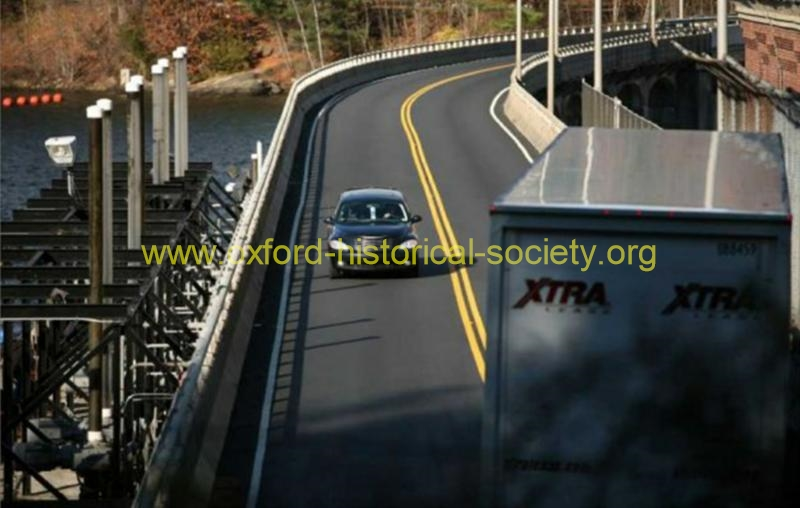

 TIGHT-SQUEEZE_post_2012-PF.jpg
An approaching car is forced to stop as a truck cuts the corner as it enters the Stevenson Dam crossing in Monroe on Tuesday, November 9, 2010. Photo Brian A. Pounds / Connecticut Post
Previous
Thumbnails
Next